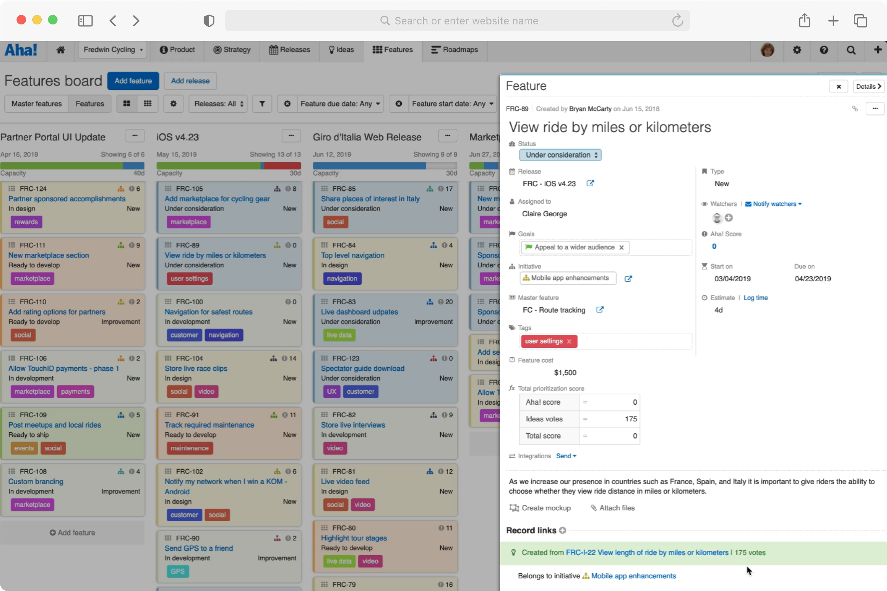
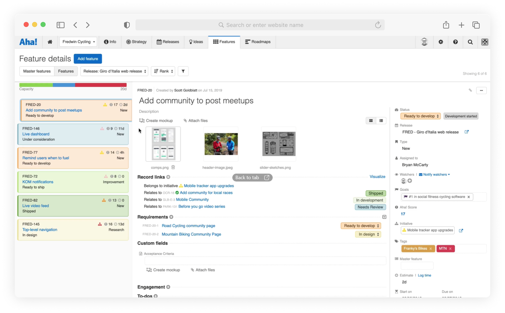
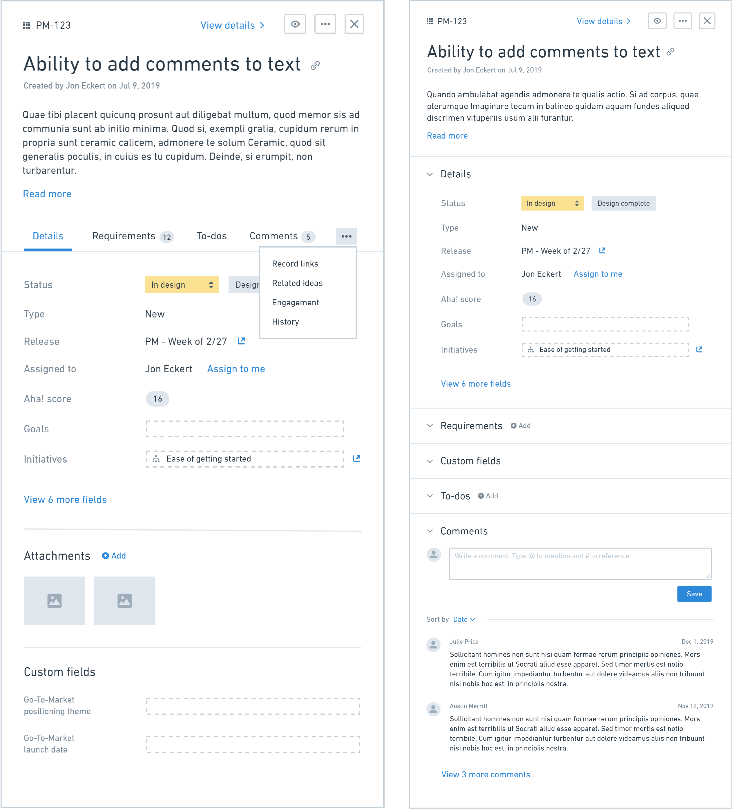
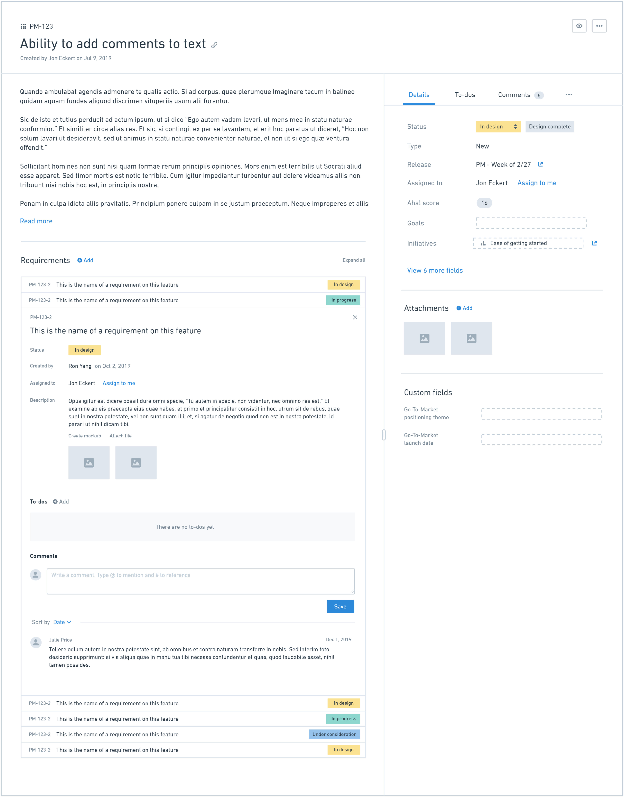
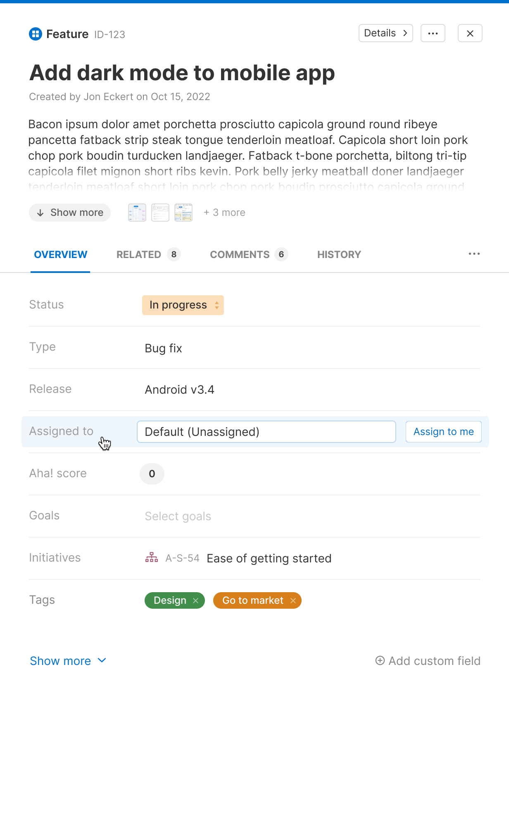
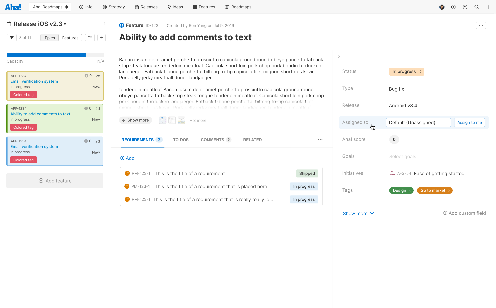
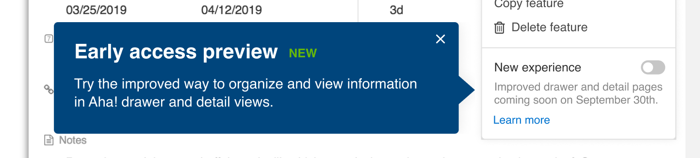

Background
Since it was founded in 2013, Aha! has grown into the #1 roadmap software. In fact, they were pioneers in the space, building a better alternative to tools like Excel and PowerPoint for Product Managers.
The Challenge
I was tasked with redesigning the application's record detail pages, which can appear in either full screen or a drawer view. A complex piece of software, Aha! has over 20 different record types, each with a details view. Because of this, record detail pages were some of the most commonly used parts of the interface -- they were a crucial part of the successful use of Aha! This was a monumental task, and the risk was very high.
The original details pages were extremely information dense. While there were benefits to being able to see a maximum amount of information "above the fold," the UI was difficult to parse and felt daunting to non-power users (power users just learned the UI over time).

A screenshot of the existing "drawer" style

A screenshot of the existing full-screen "details view" style
Our Goals
We knew that a change like this was going to be met with friction, no matter how good the redesign was. Because of this, we set out with a core set of goals that became our guiding light throughout the entire project. Our goals for the project were:
- Simplify the UI to make it easier to use and easier to learn
- Build a flexible, scalable interface that would allow consistency across many different record types
- Improve the performance of the details pages, especially upon initial load
We believe strongly in these goals and ran every decision we made through them to ensure that we were staying true to what we set out to do.
My Role
As the primary designer on this project, I led the design efforts from competitive research, early ideation, wireframing, user testing, and high-fidelity mockups, and more. I worked closely with Product Management and Engineering to craft a vision for the feature and establish a plan to launch. I also, on numerous occasions, shared in-progress work with my team as well as the entire company, gathering and implementing feedback as I went.
The Process
Once we had a vision in place and clear goals, work began. My first step was to collect competitive research and inspiration. I spent many hours creating accounts in project management software and analyzing (and capturing) how each tool handle record details.
Early Iteration
This project required many low-fidelity wireframes. One major reason for this was that we were exploring some major structural changes to the record detail interface. One of these major decisions was whether to keep the "everyone on one screen" approach that the detail pages had always used or to use a more modular tabbed approach, breaking record details into logical groupings. We knew that introducing tabs would be met with a lot of hesitancy, but we felt that it was necessary to improve performance and reduce cognitive load. Once we decided that tabs were the way forward, things really kicked into gear.

A wireframe comparison between tabbed and collapsable sections

A wireframe of the full-screen "details view" in the new layout
High Fidelity
Once we knew the general layout, it was time to work out the details of the UI. This was particularly challenging because we knew we wanted to improve the look and feel of the record details pages to give it a more modern feel and make it simpler, but we also needed to work within the confines of the existing design language since record details can be viewed anywhere in the application.

High fidelity mockup of the new "drawer" design

High fidelity mockup of the new full-screen "details view" design
To make things even more challenging, while this redesign was happening, there was an application-wide font change going on. Our icon library was also being updated. This led to many, many versions of the same design as we validated how the new font and icons would fit with the redesigned record detail views.
Additional Records
Once we had a basic framework in place, it was time to apply it to the many different records in the product. Each record had distinct data that needed to be manually designed. Thankfully, our ultra-modular design was able to handle the many needs of all of the records.
Early Access
Due to the major impact that this change would have to all customers, we introduced an Early Access Program for the very first time. The program consisted of turning on the new experience for a small group of customers and aggressively gathering feedback and iterating on the design based on that feedback.
We also, for the first time, made the transition opt-in for a period of time. This gave users time to explore the new record details experience before fully committing.

Users had the option to opt-in (and back out, if desired) to the new experience for a period of time
The Result
As expected, we heard from many customers who felt that it was harder to find information they needed. We even felt the pressure internally (we use Aha! to manage our work at Aha!). However, we felt confident that we had achieved our goals. We made (and continue to make) changes based on feedback, but we are proud of the result.
Now, over a year later, we get a lot of positive feedback on the redesigned record details views. Internally, when we manage to stumble across a screenshot of the old design, it is clear that we made great strides in the user experience for the product.